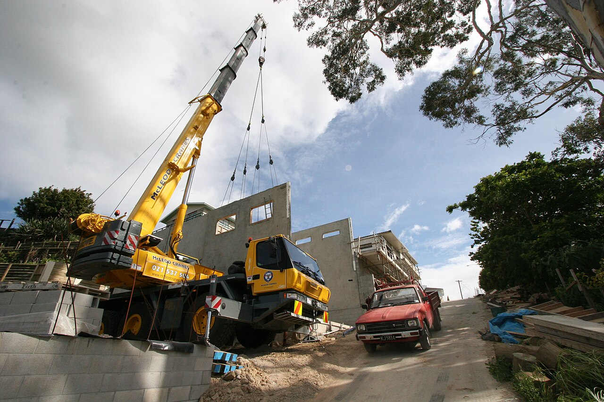
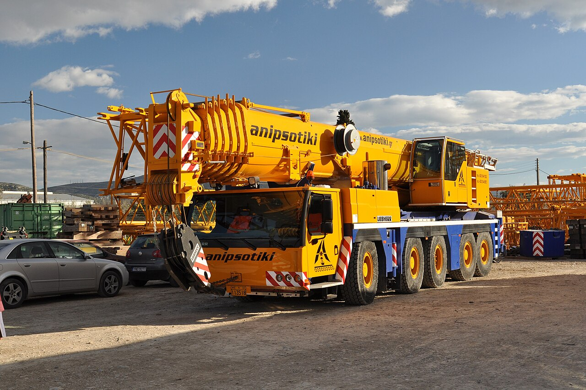
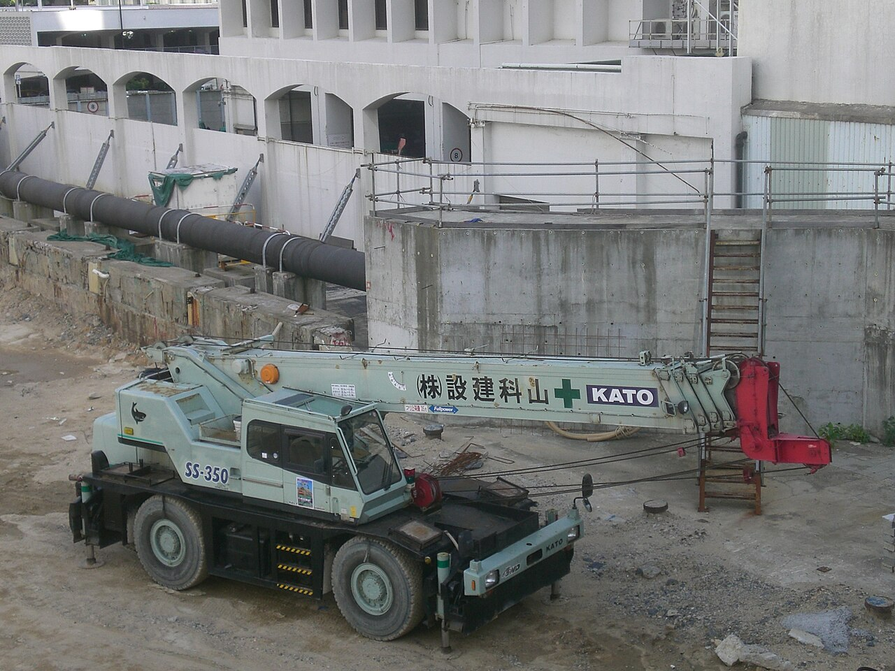
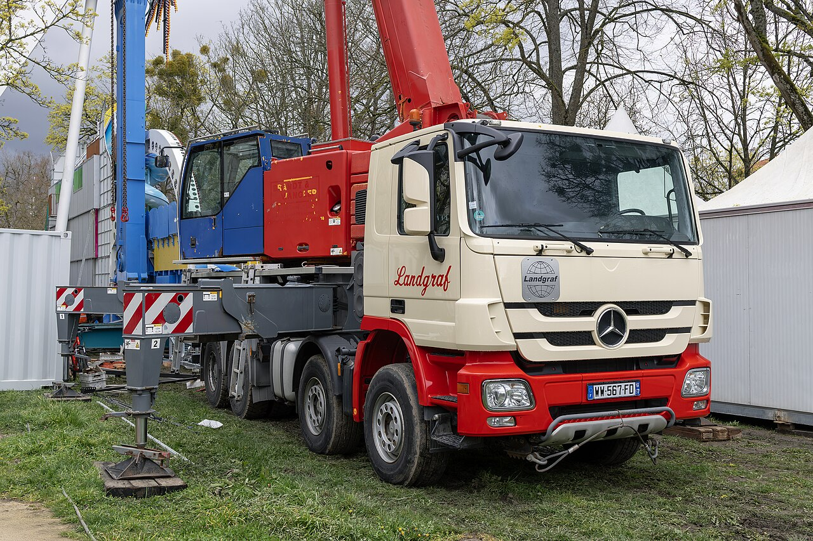
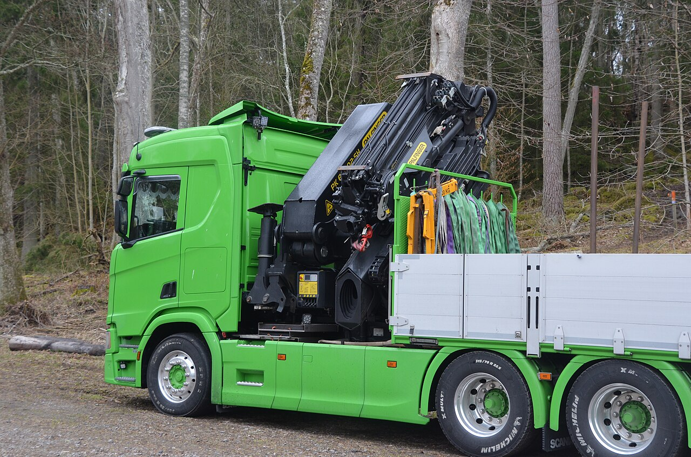
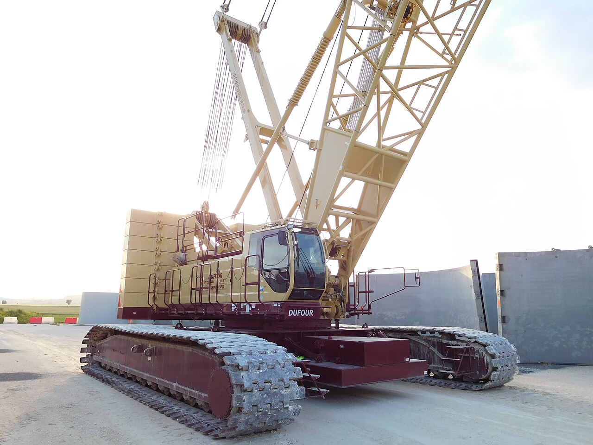
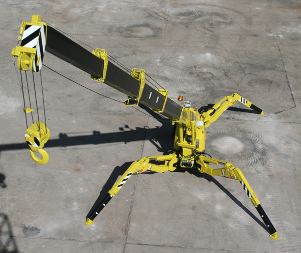
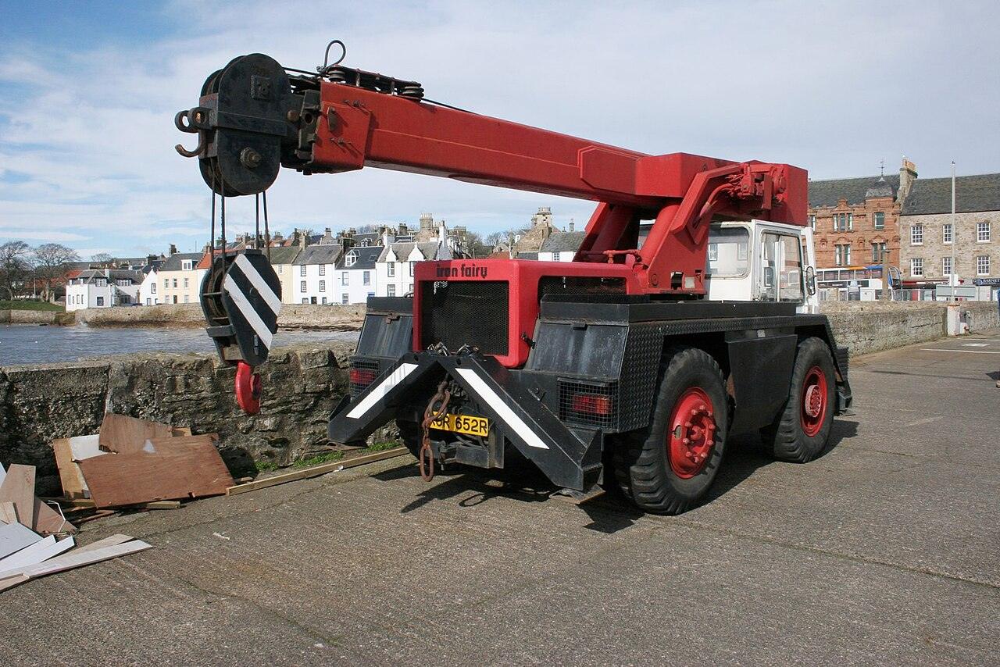

Telescópica todo terreno
Scottmss · CC BY-SA 3.0
{kind=link}
Versión reducida; la interfaz puede recortar la vista. Foto de referencia por tipo, no de la unidad real.
Flota, existencias, costos, asignaciones y registros ficticios para esta demostración. Las fotos ilustran familias de grúas y pueden mostrar un modelo distinto. Las capacidades comerciales no representan una tabla de carga; dependen de la configuración.

Scottmss · CC BY-SA 3.0
Versión reducida; la interfaz puede recortar la vista. Foto de referencia por tipo, no de la unidad real.

© 2010 K. Krallis, SV1XV · CC BY-SA 3.0
20100225-Liebherr LTM 1200-5.jpg
Versión reducida; la interfaz puede recortar la vista. Foto de referencia por tipo, no de la unidad real.

A22Empa · CC BY-SA 3.0
KATO rough terrain crane SS350.jpg
Versión reducida; la interfaz puede recortar la vista. Foto de referencia por tipo, no de la unidad real.

Alexandre Prevot from Nancy, France · CC BY-SA 4.0
Liebherr LTF 1045-4.1 (55177839413).jpg
Versión reducida; la interfaz puede recortar la vista. Foto de referencia por tipo, no de la unidad real.

Bengt Oberger · CC BY-SA 4.0
Versión reducida; la interfaz puede recortar la vista. Foto de referencia por tipo, no de la unidad real.

Cjp24 · CC BY-SA 4.0
Crawler crane, Kobelco (1).jpg
Versión reducida; la interfaz puede recortar la vista. Foto de referencia por tipo, no de la unidad real.
Alexandre Prevot from Nancy, France · CC BY-SA 2.0
Liebherr LTR 1220 (52339184745).jpg
Versión reducida; la interfaz puede recortar la vista. Foto de referencia por tipo, no de la unidad real.

Constructionman · CC BY-SA 3.0
Versión reducida; la interfaz puede recortar la vista. Foto de referencia por tipo, no de la unidad real.

Foto de referencia de grúa industrial compacta; modelo mostrado: Iron Fairy.
Richard Sutcliffe · CC BY-SA 2.0
Iron fairy - geograph.org.uk - 6092254.jpg
Sin edición; versión reducida de Wikimedia Commons. La interfaz puede recortar la vista.
Fuentes primarias consultadas el 24 de septiembre de 2026. Las compatibilidades de repuestos deben validarse por modelo y número de serie. La lista de revisión es ilustrativa y no certifica condiciones de operación.
{kind=link}
{kind=link}
.jpg){kind=link}
{kind=link}
.jpg){kind=link}
.jpg){kind=link}
{kind=link}
{kind=link}